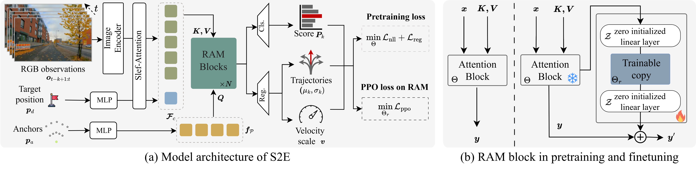

From Seeing to Experiencing: Scaling Navigation Foundation Models with Reinforcement Learning
ICLR 2026
Honglin He* 1 , Yukai Ma* 1 , Brad Squicciarini 2 , Wayne Wu 1 , Bolei Zhou 1
1 University of California, Los Angeles , 2 Coco Robotics
TL;DR
- S2E is a unified learning framework that scales navigation foundation models from passive offline video to interactive decision-making through reinforcement learning.
1. 📦 Provides a general framework for learning navigation from both offline data and online interaction.
2. 🔌 Introduces a plug-and-play Residual-Attention Module for efficient adaptation and scaling in RL.
3. 🧭 Releases NavBench-GS, a realistic 3D Gaussian Splatting benchmark for evaluating navigation performance in closed-loop, interactive, and physically grounded environments.
S2E Model architecture

S2E pipeline consists of two key components:
(1) Anchor-Guided Distribution Matching: A framework that uses anchor-conditioned architecture to learn multi-modal trajectory distributions from offline real-world videos, improving model capability from the side of representation.
(2) Residual Attention Module: A lightweight residual design that fine-tunes pretrained attention blocks via reinforcement learning in simulation, enabling new behaviors (e.g., obstacle avoidance) while preserving general visual-motor priors.
Environments for Pretraining and Finetuning
Video-Action Pretraining
URBAN-SIM Closed-loop Finetuning
NavBench-GS: Closed-Loop 3DGS Navigation Benchmark
We build NavBench-GS, a 3D Gaussian Splatting-based benchmark for evaluating navigation policies in closed-loop, visually reconstructed urban environments with simulated objects and pedestrians.
Real-World Deployment
Obstacle Avoidance
Cross-Embodiment
Comparison
Long-Horizon Navigation
Reference
@article{he2026seeing,
title={From Seeing to Experiencing: Scaling Navigation Foundation Models with Reinforcement Learning},
author={He, Honglin and Ma, Yukai and Squicciarini, Brad and Wu, Wayne and Zhou, Bolei},
journal={The Fourteenth International Conference on Learning Representations},
year={2026}
}